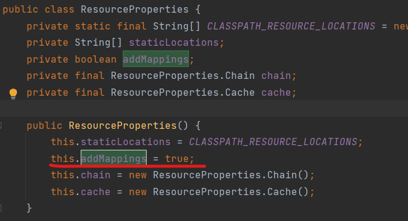
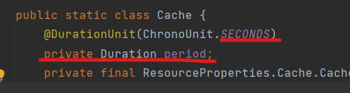
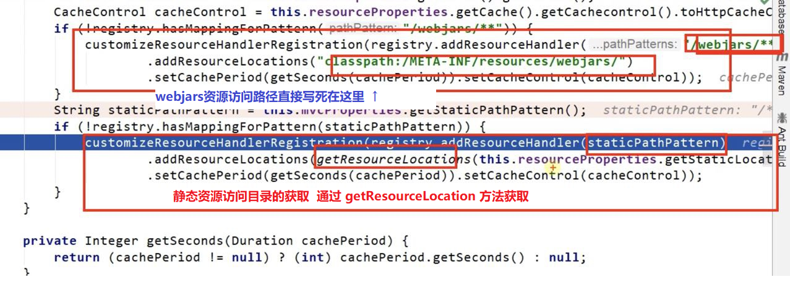

这里记录了Web开发中简单的静态资源访问方法与其源码分析过程。
静态资源目录
这里的静态资源包含“静态资源访问目录”和“静态资源所在目录”。所有静态资源都要放到“静态资源所在目录”下才能通过路径访问。
默认配置
- 静态资源所在目录：
/static (or /public or /resources or /META-INF/resources)
- 静态资源访问目录 ：
- 当前项目根路径/ + 静态资源名
- 静态资源访问原理：
静态映射/**。
- 静态资源访问流程：
请求进来，先去找Controller能否处理。不能处理的所有请求又都交给静态资源处理器。静态资源也找不到则响应404页面自定路径
可以做到自定义静态资源访问路径 和 自定义静态资源所在路径
方法如下：1
2
3
4
5
6
7
8
| spring:
mvc:
static-path-pattern: /res/**
resources:
static-locations: [classpath:/haha/]
|
静态资源的访问
我们只需要访问 项目名/static-path-pattern(自定义的访问前缀)/静态资源名 即可访问静态资源。
例如：localhost:8080/res/xxx.jpg
上述地址中，static-path-pattern并非真实存在的目录，而是由我们自行配置的。
欢迎页与Favicon
欢迎页是静态资源路径下的index.html；Favicon 是静态资源路径下的Favicon.jpg(png/gif)。
- 配置时需要遵循如下两点：
- 可以配置静态资源路径。即可以配置
static-locations
- 不可以配置静态资源的访问前缀，否则导致 index.html不能被默认访问。即不能配
static-path-pattern
静态资源配置原理
条件装配
- SpringBoot启动时加载xxxxAutoConfiguration。
- 跟进SpringMVC功能的自动配置类 WebMvcAutoConfiguration
通过观察下面的条件装配代码，我们知道了，何时会使自动配置生效
1
2
3
4
5
6
7
8
9
10
11
12
13
|
@Configuration(proxyBeanMethods = false)
@ConditionalOnWebApplication(type = Type.SERVLET)
@ConditionalOnClass({ Servlet.class, DispatcherServlet.class, WebMvcConfigurer.class })
@ConditionalOnMissingBean(WebMvcConfigurationSupport.class)
@AutoConfigureOrder(Ordered.HIGHEST_PRECEDENCE + 10)
@AutoConfigureAfter({ DispatcherServletAutoConfiguration.class, TaskExecutionAutoConfiguration.class,
ValidationAutoConfiguration.class })
public class WebMvcAutoConfiguration {}
|
具体为容器配置内容
这里我们按照下面的顺序去分析底层原理。
1、想要知道具体容器中注册了什么
我们就要去关注 @EnableConfigurationProperties(xxx.class) 这个注解。
（因为，这个注解会为类进行参数绑定）
相关代码如下：
1
2
3
4
5
| @Configuration(proxyBeanMethods = false)
@Import(EnableWebMvcConfiguration.class)
@EnableConfigurationProperties({ WebMvcProperties.class, ResourceProperties.class })
@Order(0)
public static class WebMvcAutoConfigurationAdapter implements WebMvcConfigurer {}
|
通过这个代码我们知道，除了这个配置类本身，还有WebMvcProperties.class和ResourceProperties.class这两个类被绑定和注册到容器中。
2、跟踪这两个类
我们发现，这两个类指定的配置前缀分别为：
1
2
3
4
5
6
7
8
9
10
|
@ConfigurationProperties(
prefix = "spring.mvc"
)
/=====ResourceProperties.class=====
@ConfigurationProperties(
prefix = "spring.resources",
ignoreUnknownFields = false
)
|
即：配置文件中 spring.mvc spring.resources 的参数配绑定了，这也就解释了，我们上面yaml 配置未见为何要这么写
3、分析配置类
回到配置类本身。关注public static class WebMvcAutoConfigurationAdapter implements WebMvcConfigurer {...}的方法体，开始分析。
1、构造函数 WebMvcAutoConfigurationAdapter
我们看到配置类只有唯一带参构造函数。
当一个配置类只有唯一带参构造函数时，所有参数的值，都会从容器确定
1
2
3
4
5
6
7
8
| public WebMvcAutoConfigurationAdapter(ResourceProperties resourceProperties,
WebMvcProperties mvcProperties, ListableBeanFactory beanFactory,
ObjectProvider<HttpMessageConverters> messageConvertersProvider,
ObjectProvider<WebMvcAutoConfiguration.ResourceHandlerRegistrationCustomizer> resourceHandlerRegistrationCustomizerProvider,
ObjectProvider<DispatcherServletPath> dispatcherServletPath,
ObjectProvider<ServletRegistrationBean<?>> servletRegistrations) {
...方法体...
}
|
对上述传参的分析：
- ResourceProperties resourceProperties；获取和spring.resources绑定的所有的值的对象
- WebMvcProperties mvcProperties 获取和spring.mvc绑定的所有的值的对象
- ListableBeanFactory beanFactory Spring的beanFactory
- HttpMessageConverters 找到所有的HttpMessageConverters
- ResourceHandlerRegistrationCustomizer 找到 资源处理器的自定义器。=========
- DispatcherServletPath
- ServletRegistrationBean 给应用注册Servlet、Filter….
2、资源处理的默认规则
1
2
3
4
5
6
7
8
9
10
11
12
13
14
| @Override
public void addResourceHandlers(ResourceHandlerRegistry registry) {
if (!this.resourceProperties.isAddMappings()) {
logger.debug("Default resource handling disabled");
return;
}
Duration cachePeriod = this.resourceProperties.getCache().getPeriod();
CacheControl cacheControl = this.resourceProperties.getCache().getCachecontrol().toHttpCacheControl();
if (!registry.hasMappingForPattern("/webjars/**")) {
customizeResourceHandlerRegistration(registry.addResourceHandler("/webjars/**")
.addResourceLocations("classpath:/META-INF/resources/webjars/")
.setCachePeriod(getSeconds(cachePeriod)).setCacheControl(cacheControl));
}
|
PART1：
我们看第3行的 if 判断中的isAddMappings。追踪后看到

这里由addMapings决定，默认为 true。如果我们在配置文件这么写：就可以禁用所有静态资源。
1
2
3
| spring:
resources:
add-mappings: false
|
PART2：
我们再看这个代码第6行：Duration cachePeriod = this.resourceProperties.getCache().getPeriod();
追踪getPeriod()，我们看到了

这里可以配置缓存策略 单位是秒
配置：
1
2
3
| spring:
cache:
period: 11000
|
PART3：
再看剩下的部分：

3、欢迎页的处理规则
HandlerMapping：处理器映射。保存了每一个Handler能处理哪些请求。
1
2
3
4
5
6
7
8
9
10
11
12
13
| HandlerMapping：处理器映射。保存了每一个Handler能处理哪些请求。
@Bean
public WelcomePageHandlerMapping welcomePageHandlerMapping(ApplicationContext applicationContext,
FormattingConversionService mvcConversionService, ResourceUrlProvider mvcResourceUrlProvider) {
WelcomePageHandlerMapping welcomePageHandlerMapping = new WelcomePageHandlerMapping(
new TemplateAvailabilityProviders(applicationContext), applicationContext, getWelcomePage(),
this.mvcProperties.getStaticPathPattern());
welcomePageHandlerMapping.setInterceptors(getInterceptors(mvcConversionService, mvcResourceUrlProvider));
welcomePageHandlerMapping.setCorsConfigurations(getCorsConfigurations());
return welcomePageHandlerMapping;
}
|
追踪WelcomePageHandlerMapping返回值类型
1
2
3
4
5
6
7
8
9
10
11
12
13
| WelcomePageHandlerMapping(TemplateAvailabilityProviders templateAvailabilityProviders,
ApplicationContext applicationContext, Optional<Resource> welcomePage, String staticPathPattern) {
if (welcomePage.isPresent() && "/**".equals(staticPathPattern)) {
logger.info("Adding welcome page: " + welcomePage.get());
setRootViewName("forward:index.html");
}
else if (welcomeTemplateExists(templateAvailabilityProviders, applicationContext)) {
logger.info("Adding welcome page template: index");
setRootViewName("index");
}
}
|
我们发现要想使用静态欢迎页，必须满足：
“welcomePage.isPresent() 欢迎页存在” 和 “staticPathPattern 必须是 /** ”
总结：
静态配置方法
本文涉及的静态配置方法
1
2
3
4
5
6
7
8
9
10
11
12
13
| spring:
mvc:
static-path-pattern: /res/**
resources:
static-locations: [classpath:/haha/]
add-mappings: true
cache:
period: 11000
|
本次使用的源码分析方法总结
- 关注 @EnableConfigurationProperties(xxx.class) ：了解那些类被绑定并注入容器
- 跟进上述类，看 @ConfigurationProperties(prefix = “spring.mvc”) 了解配置文件绑定前缀
- 看 配置类方法 的 if(…){…}语句 了解是否可以禁用某些功能
- 追 配置类方法 的 get(…)方法 –> return 返回值 –> 同类搜索关键词 了解某些值的初始赋值 和 配置方法
- 有时，也可以利用 提示功能 ，先配 yaml 对应参数 再从 yaml 的 参数反向追踪源码，了解底层原理